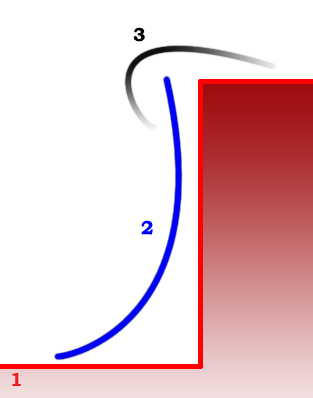

Graphics
Assets
Management
By Alexander Valencia
30 июня 2003
Художники хотят получить следующую картинку (см ниже) и дизайнеров это тоже устраивает
Сверху и снизу лежит родной terrain, а вертикальная стенка делается отдельным мешем, но которые кладётся другая текстура. С точки зрения редактора постановка таких обрывов будет выглядеть следующим образом: указываются контрольные точки сплайна (как у дорог и рек), в каждой контрольной точке указывается высота (как ширина для дорог и рек) и указывается направление обрыва (в одну либо в другую сторону от сплайна). После этого программным образом создаётся разрыв в terrain’е и на месте разрыва ставится вертикальная (“мятая”) стенка по следующей схеме:

где (1) – это сетка terrain’а, (2) – вертикальная
стенка, (3) – “козырёк”. Вертикальная стенка затекстурена специальной текстурой
(не текстурой terrain’а, а отдельной своей), а
“козырёк” имеет ту же текстуру, что и terrain под ним.
По краям козырёк уходит в прозрачность, что позволяет сверху незаметно стыковать
его с очновным terrain’ом, а снизу со скалой, создавая
эффект нависания. К (боковым) краям обрыва высота плавно сходит к нулю и terrain
стыкуется сам с собой.
Текстура на вертикальной стенке тайлится вдоль длины стенки (как и дороги).
Вертикальная стенка мнётся
программно. В настройках будет существовать “коэффициент помятости”.
В дальнейшем (раздел “бантики”)
можно будет приделать регулирование наклона (в сторону уменьшения – сначала мы
делаем максимально вертикально) для обрыва в контрольных
точках.